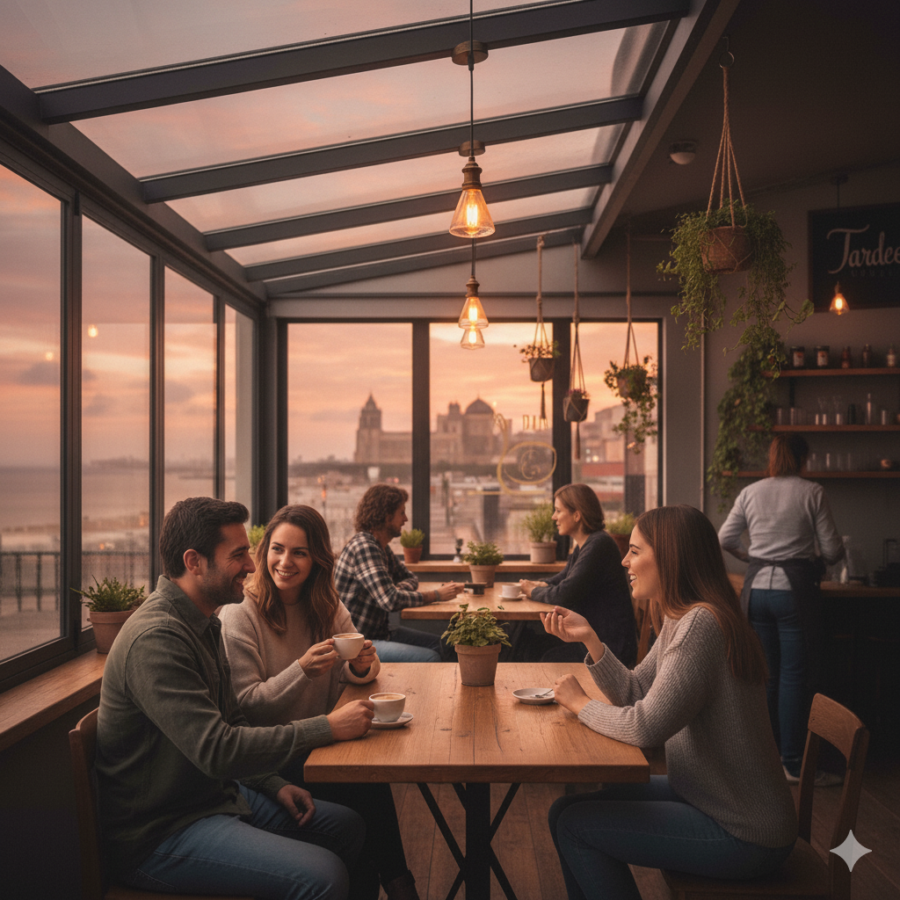

Visita sorpresa de Emily Armstrong
El pasado viernes vivimos una tarde inolvidable. La cantante Emily Armstrong, nueva vocalista de Linkin Park, nos sorprendió con una actuación improvisada en nuestra terraza.
Tu rincón de sabor y charlita
Aquí compartimos novedades, anécdotas y momentos especiales de nuestro día a día. Porque cada taza tiene una historia.
El pasado viernes vivimos una tarde inolvidable. La cantante Emily Armstrong, nueva vocalista de Linkin Park, nos sorprendió con una actuación improvisada en nuestra terraza.

Una tormenta repentina nos pilló a todos en la cafetería. En vez de correr, alguien puso música.
Fue un momento espontáneo que recordaremos siempre. Desde entonces lo llamamos “el día del Café Mojado”.
Organizamos nuestro primer Concurso de Postres Caseros. Tartas, flanes, bizcochos… ¡hasta tiramisú de mojito!
La ganadora fue la abuela de un cliente con su tarta de almendra y limón.